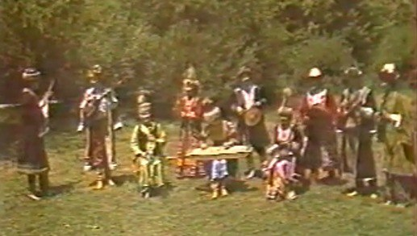

"Мұрагер" Этно-фольклорлық ансамблі
1984 жылы А. Райымбергенов пен Д. Тұяқбаев бастауымен Құманғазы атындағы Қазақ Ұлттық
консерваториясының талантты жастарынан жиналған фольклорлық этнографиялық ансамбль құрады.
Ансамбль көптеген Халықаралық және Республикалық фестивальдарға қатысып жүлделі орындарға ие
болды. Мәскеуде өткізілген жастар мен студенттердің Дүниежүзілік фестивалінің дипломанты
атанды. Ал, 1990 жылы ансамбль Ленин комсомолы сыйлығының лауреаты болды.
Репертуарында «Адай», «Көрұғлы», «Сары өзен» сынды күйлер орындған. «Мұрагер» фольклорлық
этнографиялық ансамблі қазақтың дәстүрлі музыкасын әлемге танытып, басқа да әйгілі
ансамбльдермен ТМД елдерінде, сондай-ақ, Аустрия, Үндістан, Шри-Ланка, Италия, Жапония,
Кипр, Франция және басқа елдердің үлкен сахналарында өз өнерлерін көрсеткен.